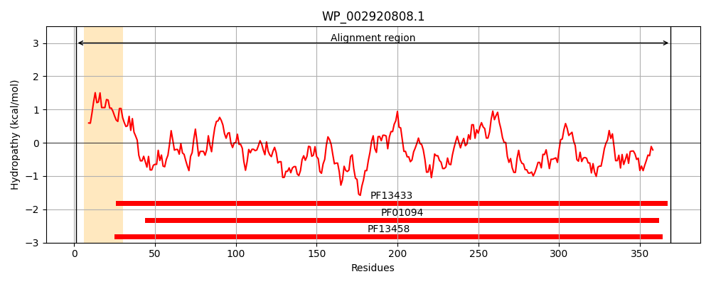
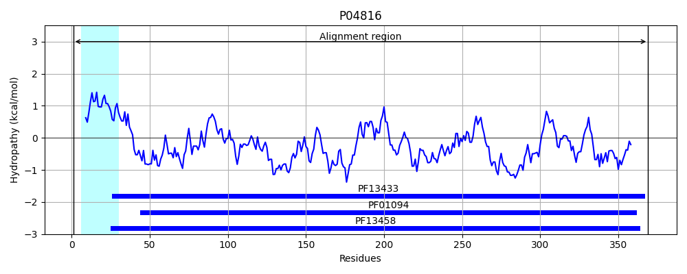
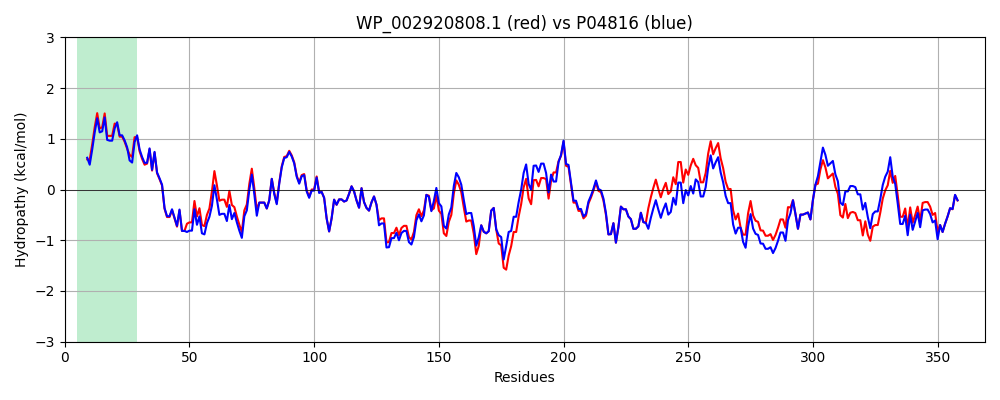

Hit Accession: P04816
Hit TCID: 3.A.1.4.1
Hit Description: gnl|BL_ORD_ID|8317 gnl|TC-DB|P04816|3.A.1.4.1 Leucine-specific binding protein precursor (LS-BP) (L-BP) - Escherichia coli.
Mach Len: 369
e:0.000000
Query TMS Count : 1
Hit TMS Count: 1
TMS-Overlap Score: 1.250000
Predicted Substrates:CHEBI:17191;L-isoleucine, CHEBI:25017;leucine, CHEBI:27266;valine, CHEBI:8089;phenylalanine, CHEBI:9800;tyrosine
BLAST Alignment:
Score: 1742 , Bit scores: 675 bits, E-value: 0.0e+00, Alignment length: 369, Percentage identity: 90
Query: 1 MKRNAKTIVAGIVALAMSHAAMAKDIKVAVVGAMSGPVAQWGDMEFNGARQAIKDINASGGIKGDKLVAVEYDDACDPKQAVAVANKIVNDGIQYVIGHLCSSSTQPASDIYEDEGILMISPGATNPELTQRGYQYIMRTAGLDSSQGPTAAKYIVEKVKPQRIAIIHDKQQYGEGLARSVQDNLKKAGANIVFFDGITAGEKDFSALLARLKKENIDFVYYGGYYPEMGQMLRQARSVGLKTVFMGPEGVGNASLSNIAGAAAEGMLVTMPKRYDQDPANSAIVNALKAEKKDPSGPYVWITYAAVQSLAQAMDRTGSQQPLDLIKDLKAHGAKTVIGPLTWDEKGDLKGFEFGVFQWHADGSSSAAK 369
MKRNAKTI+AG++ALA+SH AMA DIKVAVVGAMSGP+AQWGDMEFNGARQAIKDINA GGIKGDKLV VEYDDACDPKQAVAVANKIVNDGI+YVIGHLCSSSTQPASDIYEDEGILMISPGATNPELTQRGYQ+IMRTAGLDSSQGPTAAKYI+E VKPQRIAIIHDKQQYGEGLARSVQD LK A AN+VFFDGITAGEKDFSAL+ARLKKENIDFVYYGGYYPEMGQMLRQARSVGLKT FMGPEGVGNASLSNIAG AAEGMLVTMPKRYDQDPAN IV+ALKA+KKDPSGPYVWITYAAVQSLA A++RTGS +PL L+KDLKA+GA TVIGPL WDEKGDLKGF+FGVFQWHADGSS+AAK
Sbjct: 1 MKRNAKTIIAGMIALAISHTAMADDIKVAVVGAMSGPIAQWGDMEFNGARQAIKDINAKGGIKGDKLVGVEYDDACDPKQAVAVANKIVNDGIKYVIGHLCSSSTQPASDIYEDEGILMISPGATNPELTQRGYQHIMRTAGLDSSQGPTAAKYILETVKPQRIAIIHDKQQYGEGLARSVQDGLKAANANVVFFDGITAGEKDFSALIARLKKENIDFVYYGGYYPEMGQMLRQARSVGLKTQFMGPEGVGNASLSNIAGDAAEGMLVTMPKRYDQDPANQGIVDALKADKKDPSGPYVWITYAAVQSLATALERTGSDEPLALVKDLKANGANTVIGPLNWDEKGDLKGFDFGVFQWHADGSSTAAK 369 | Protein Hydropathy Plots: |
|---|
|  |  |
Pairwise Alignment-Hydropathy Plot:
|
|---|
|  |